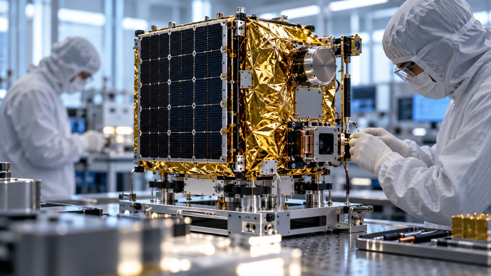

![]()
Coordination and primary sensing
Primary radar transmission and reception, acquisition coordination, onboard processing and inter-satellite communication.
Insight Set combines formation-based sensing with a unified analytical workflow. The architecture is designed to reduce temporal information gaps across complementary observations.

The baseline concept comprises a three-satellite cluster operating as a coordinated formation. Acquisition planning, relative geometry and inter-satellite communication support observation of a common area.
Engineering development addresses timing, navigation, calibration, payload interfaces and distributed processing.
Concept architecture under development. Detailed payload specifications, timing tolerances and formation geometry are addressed through technical studies.
Primary radar transmission and reception, acquisition coordination, onboard processing and inter-satellite communication.
Distributed radar reception and complementary optical, thermal and cooperative RF sensing within the proposed payload architecture.
An additional receiver geometry and complementary sensing capacity for coordinated acquisition and multimodal assessment.
The four modality families provide different observables. Availability and analytical value depend on scene conditions, sensor performance and mission geometry.
| Modality | Principal observable | Analytical contribution | Principal constraint |
|---|---|---|---|
| Synthetic aperture radar | Microwave backscatter | Structure, surface properties, change and detection evidence | Geometry, resolution, clutter, frequency and calibration |
| Electro-optical / spectral | Reflected radiation | Visual context, surface characterisation and spectral discrimination | Illumination, cloud cover and atmospheric transmission |
| Thermal infrared | Emitted thermal radiance | Temperature-related anomalies and activity indicators | Cloud cover, emissivity, atmospheric effects and spatial resolution |
| Cooperative RF | Compatible radio transmissions | Declared identity, position and movement context | Transmission availability, reception geometry and reporting reliability |
Explore how acquisition strategy changes the relationship between complementary observations. Select an architecture, expand the comparison or adjust the illustrative displacement model.
Single-modality systems provide specialised evidence; sequential acquisition supports selective follow-up; a synchronised architecture coordinates complementary observations around the same event. Actual performance depends on implementation and validation.
EXTENDED TECHNICAL COMPARISON · 15 DIMENSIONS
| Dimension | Single-modality observation | Sequential tip-and-cue | R4 synchronised concept |
|---|---|---|---|
| Acquisition strategy | One sensing modality characterises an observation. | An initial observation cues a subsequent acquisition. | Complementary measurements are coordinated within a common observation window. |
| Modality diversity | Modality-specific information; additional evidence may come from separate systems. | Complementary modalities may be combined across successive acquisitions. | Radar, optical, thermal and cooperative RF are considered within one coordinated architecture. |
| Temporal relationship | Cross-modal alignment is not intrinsic to the individual observation. | A variable interval separates the cue and follow-up. | Inter-modal acquisition offsets are managed as explicit system requirements. |
| Dynamic-scene association | Association with later observations requires motion or scene-evolution modelling. | Targets and environmental conditions can change before follow-up. | Smaller time offsets can reduce association ambiguity for evolving scenes. |
| Spatial registration | Geolocation and calibration remain essential within the modality. | Registration is required across platforms, geometries and acquisition times. | Common-area planning supports registration; relative geometry and calibration still require estimation. |
| Analytical value | Strong information about the physical observable measured by the sensor. | Targeted follow-up adds context and may resolve selected ambiguities. | Complementary event evidence can support more coherent contextual interpretation. |
| Motion-related displacement | Depends on the interval to any associated observation. | Position mismatch may accumulate during the cue-to-observation interval. | Reducing acquisition offsets reduces the temporal displacement term, not all estimation error. |
| Atmospheric and illumination constraints | Determined by the specific sensing modality. | Follow-up acquisitions may encounter different atmospheric or lighting conditions. | Each modality retains its physical constraints even within a common observation event. |
| Tasking and responsiveness | Depends on orbit, pointing, scheduling and available resources. | Includes detection, cue transfer and availability of a suitable follow-up acquisition. | Includes coordinated tasking, formation geometry and concurrent payload availability. |
| Revisit and persistence | Depend on constellation, orbit, swath and tasking priorities. | Depend on the available cueing and follow-up assets. | Synchronisation alone does not establish continuous coverage or a particular revisit interval. |
| Processing and delivery latency | Depends on onboard processing, downlink and ground workflows. | May include delay while waiting for additional observations. | Can reduce waiting for complementary evidence; delivery still depends on the complete processing chain. |
| Confidence and uncertainty | Requires calibrated measurement uncertainty and application validation. | Must account for cross-sensor and temporal association uncertainty. | May reduce temporal ambiguity; confidence must still be calibrated and validated. |
| Engineering complexity | Concentrated in the payload, platform and modality-specific processing. | Adds cueing interfaces, scheduling and cross-system data integration. | Adds coordination, relative navigation, timing, calibration and payload-integration requirements. |
| Validation evidence | Sensor characterisation and application-specific performance assessment. | Cue success, follow-up latency, registration and analytical performance. | Timing offsets, common-area overlap, registration, fusion quality and end-to-end performance. |
| Representative suitability | Tasks adequately addressed by one measurement family. | Events that benefit from selective follow-up or additional evidence. | Dynamic events where coordinated complementary observations materially support interpretation. |
For constant speed, displacement is v × Δt. Adjust these hypothetical values to examine the temporal displacement term.
This model assumes constant speed. It is not a reconstruction error, mission-performance prediction or claimed R4 timing specification. Navigation, registration and calibration errors remain separate.
A planned analytical environment linking areas of interest, observation timelines, multimodal evidence and traceable assessment.
Specify the area, observation window and analytical question.
Coordinate complementary measurements of the same event.
Align geometry, timestamps and calibration metadata.
Evaluate detections, change, confidence and uncertainty.
Provide traceable evidence for authorised human assessment.
Associate acquisition metadata, common coordinates and temporal context before interpretation.
Explore detections, change, anomalies and candidate explanations with confidence and uncertainty information.
Prepare geospatial layers, event records and reports for analyst review and downstream integration.
Development demonstrations may use simulations and representative datasets. Demonstration results are distinct from validated orbital service performance.
Detailed engineering discussions can be conducted within an appropriate confidentiality framework.

Navigate an illustrative multimodal workflow, then request a guided discussion tailored to your application.
Concept imagery and synthetic preview; no operational data feed.